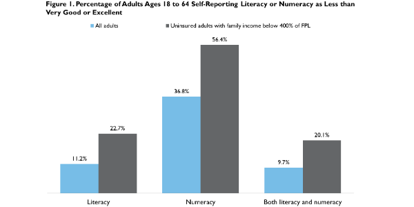

|  |
|
||||||||||||||||||||||||||||||||||||||||||||||||||||||||||||||||||
Low Levels of Self-Reported Literacy and Numeracy Create Barriers to Obtaining and Using Health Insurance Coverage
Sharon K. Long, Adele Shartzer, and Mary PolitiOctober 27, 2014
The expansion of health insurance coverage under the Affordable Care Act (ACA) could improve health care access and use for previously uninsured adults. Navigating program eligibility systems, choosing from among available insurance options, and accessing care in an unfamiliar and complicated health care system may prove challenging, particularly for adults with limited literacy and numeracy. As stated by the Institute of Medicine, “health literacy is the product of the interaction between individuals’ capacities and the health literacy-related demands and complexities of the health care system. Specifically, the ability to understand, evaluate, and use numbers is important to making informed health care choices” (Institute of Medicine 2014). Though the ACA has expanded the coverage options available to many nonelderly adults, obtaining and using that coverage is likely challenging for many adults. Nationwide, an estimated 80 million Americans have low health literacy, and studies suggest that low health literacy is associated with poorer health outcomes (Berkman et al. 2011).
Following implementation of the ACA’s Medicaid expansion and subsidized insurance coverage available through health insurance Marketplaces as part of the Affordable Care Act in January 2014, an estimated 8 million adults had gained health insurance coverage by June 2014 (Long et al. 2014). In the Marketplace and often in Medicaid Managed Care, those adults must now select a health plan; this requires both literacy and numeracy skills as they assess available information and weigh the costs and benefits of the plan options available to them.
Limited health insurance literacy can lead to challenges navigating insurance plan enrollment, accessing health care, and using health care under the health plan (Consumers Union and American Institute for Research 2014). For some newly insured, using health insurance coverage will be a new experience that requires an understanding of such insurance terms as coinsurance, premiums, and deductibles. As few as 24 percent of individuals understand health insurance terms (Kenney, Karpman, and Long 2013), and the uninsured face particular challenges with health insurance concepts (Politi et al. 2014). Once insured, using health insurance often requires adequate numeracy to understand risk and assess the value of different treatment options. These skills may be particularly difficult for adults who have historically had less contact with the health care system. Further, health care decisions are often made during physical and emotional distress, limiting an individual’s ability to comprehend information and make an optimal decision.
This brief uses data from the June 2014 Health Reform Monitoring Survey (HRMS) to describe literacy and numeracy among nonelderly adults (ages 18 to 64) overall and for the population targeted by coverage expansions under the ACA.
What We Did
This brief draws upon data collected from nonelderly adults in the June 2014 wave of the HRMS. In this wave of the HRMS, we asked respondents to rate their ability to read (literacy) and their ability to work with numbers (numeracy) on a five-point scale of “excellent,” “very good,” “good,” “fair,” or “poor.” Because of the competing demand for content in the HRMS, we were limited to one measure each for literacy and numeracy. The HRMS is a self-administered survey and thus likely understates literacy issues in the overall US population relative to interviewer-administered surveys.
We present self-reported literacy and numeracy for all nonelderly adults in our sample and highlight uninsured nonelderly adults with family income below 400 percent of the federal poverty level (FPL), the target population for subsidized coverage through the health insurance Marketplaces or expanded Medicaid coverage established under the ACA.1
Based on responses to the literacy and numeracy questions, we categorize nonelderly adults into three groups:
What We Found
Among the nonelderly adults ages 18 to 64 in our sample, numeracy is a bigger challenge than literacy (figure 1). More than 10 percent of nonelderly adults (11.2 percent) rate their literacy as less than very good or excellent, compared with more than one-third (36.8 percent) rating their numeracy as less than very good or excellent. Altogether, about 10 percent of adults face challenges in both literacy and numeracy.
Both literacy and numeracy tend to be lower for uninsured adults compared with insured adults (data not shown), particularly for the uninsured adults with family income between below 400 percent of FPL who are thus potentially eligible for subsidized coverage through the Marketplace or the Medicaid coverage expansion. For these uninsured adults who may be seeking coverage in the Marketplace or enrolling in Medicaid, self-rated literacy and numeracy are lower, with only 40.1 percent indicating that they have strong literacy and numeracy skills (table 1).
Gaps in literacy and numeracy among the uninsured will likely make navigating the health care system difficult, as indicated by the past experiences of insured adults in choosing a health plan. Fully 48.7 percent of insured adults with income below 400 percent of FPL who had limited literacy and numeracy report they had difficulty finding information on one or more factors to support their plan choice when they last selected a health plan (figure 2). Insured adults in this income group with limited literacy and numeracy report similar levels of difficulty finding information for both financial and nonfinancial factors (40.9 and 41.5 percent, respectively). These patterns are similar if we expand the sample to include all insured adults, among whom 48.4 percent with limited literacy and numeracy report difficulty finding information on one or more factors (data not shown).
Even among insured adults with strong literacy and numeracy, finding information on health plans can be difficult when trying to enroll. Of insured adults with strong literacy and numeracy and family income below 400 percent of FPL, 36.2 percent report difficulty finding information on at least one factor, 30.4 percent report difficulty finding information on a nonfinancial factor, and 26.0 percent report difficulty finding information on a financial factor.
Identifying uninsured adults with limited literacy and numeracy skills for targeted outreach efforts and decision support assistance will be challenging because literacy and numeracy gaps cross demographic, socioeconomic, and geographic lines. Although our sample size is small for some subgroups, limited literacy and numeracy are reported by uninsured adults of all ages, races, and ethnicities; men and women; and adults with family income below 400 percent of FPL (figure 3). However, problems with literacy levels appear to be more pronounced for uninsured Hispanic adults (data not shown) and adults with low levels of educational attainment. In addition, a higher share of uninsured adults with family income at or below 138 percent of FPL (the target range for Medicaid eligibility under the ACA expansions) report literacy and numeracy issues than uninsured adults targeted for Marketplace subsidies (24.6 percent and 10.1 percent, respectively). Notably, 39.3 percent of uninsured adults in fair or poor health with income below 400 percent of FPL have limited literacy and numeracy; this group is likely to need health care services and to use insurance policies after gaining coverage.
What It Means
This analysis of June 2014 data shows literacy and numeracy issues are common among nonelderly adults, particularly among uninsured nonelderly adults with family income below 400 percent of FPL (the target population for the Marketplace and Medicaid expansion). Given the reliance of the HRMS on a self-administered format, it is likely that these estimates understate literacy and numeracy issues because participation in the survey requires a basic level of literacy. This survey focuses on general literacy and, because of competing demands in the HRMS survey instrument, uses unvalidated measures of literacy and numeracy that are self-reported rather than objectively assessed. Though there are limitations to these measures, we find evidence that literacy and numeracy challenges are present in the target population for the ACA coverage provisions and are associated with difficulty finding information to support plan enrollment choice. The National Assessment of Adult Literacy included a component focused specifically on health literacy using task-oriented assessments and found that about 14 percent of adults have below basic health literacy, with similar trends across demographic groups to those reported in this brief (Kutner et al. 2006).
Navigating the changes in the health care system is challenging for many people, especially for adults with limited literacy and numeracy. For the uninsured adults targeted by the Marketplace and Medicaid expansion, the process of applying for coverage and selecting a health plan requires understanding insurance terms, calculating complicated costs, and assessing risk. The plan selection experiences of insured adults reported in the HRMS suggest that adults with limited literacy and numeracy often have difficulty finding information on health plans to support plan choice. As the next open enrollment period nears and individuals make enrollment and re-enrollment decisions, research suggests that providing information in many formats, such as numerical data, graphs, narratives, and text, enables people to absorb information in the best way for them (Quincy 2014). By providing access to decision-support tools, glossaries, and in-person assistance, as well as tailoring and presenting information in novel ways (such as interactive formats), Marketplace and Medicaid administrators as well as insurance carriers can help people make optimal enrollment decisions.
Providing decision-support tools in many formats can help address literacy and numeracy issues, but targeting outreach may be challenging. Literacy and numeracy issues are common across uninsured adults in different groups but are especially prevalent among uninsured nonwhite (including Hispanic) adults, uninsured adults with lower educational attainment, and low-income uninsured adults. Among uninsured adults who are likely eligible for Medicaid or the Marketplace and are in fair or poor health, nearly two in five have limited literacy and numeracy. These individuals may face particular challenges evaluating health coverage options and accessing care in a complex medical system. However, their need for health services also could present opportunities to identify those who need assistance and to provide easy-to-understand information and support at the site of care. Though many adults use the website to find information on health plans in the Marketplace, a substantial share turned to in-person assistance from other sources such as hospitals or clinics (Zuckerman et al. 2014; Blavin, Zuckerman, and Karpman 2014). Targeting such resources to persons with literacy or numeracy limitations could be beneficial given challenges faced in the enrollment process.
Further, as the health insurance market migrates to a direct-to-consumer environment, whether in public exchanges or the private exchanges increasingly used by employees, there is a need to simplify the presentation of information about benefit design and cost-sharing. This may ultimately lead to a simplification of plan features and design, but in the short term there is a need for carriers and those creating plan choice tools to strive to better support consumer choice, particularly for those with limited numeracy and literacy.
References
Berkman, Nancy D., Stacey L. Sheridan, Katrina E. Donahue, David J. Halpern, and Karen Crotty. 2011. “Low Health literacy and Health Outcomes: An Updated Systematic Review.” Annals of Internal Medicine 155 (2): 97–107.
Blavin, Fredric, Stephen Zuckerman, and Michael Karpman. 2014. Obtaining Information on Marketplace Health Plans: Website Dominates but Key Groups Also Use Other Sources. Washington, DC: Urban Institute.
Consumers Union and American Institute for Research. 2014. A Report from the Health Insurance Literacy Expert Roundtable: Measuring Health Insurance Literacy: A Call To Action. Yonkers, NY: Consumers Union.
Institute of Medicine. 2014. Health Literacy and Numeracy: Workshop Summary. Melissa G. French, Rapporteur. Washington, DC: National Academies Press.
Kenney, Genevieve M., Michael Karpman, and Sharon K. Long. 2013. Uninsured Adults Eligible for Medicaid and Health Insurance Literacy. Washington, DC: Urban Institute.
Kutner, Mark, Elizabeth Greenberg, Ying Jin, and Christine Paulsen. 2006. The Health Literacy of America’s Adults: Results From the 2003 National Assessment of Adult Literacy. NCES Report 2006–483. Washington, DC: US Department of Education, National Center for Education Statistics.
Long, Sharon K., Genevieve M. Kenney, Stephen Zuckerman, Douglas Wissoker, Adele Shartzer, Michael Karpman, Nathaniel Anderson, and Katherine Hempstead. 2014. Taking Stock at Mid-Year: Health Insurance Coverage under the ACA as of June 2014. Washington, DC: Urban Institute
Paasche-Orlow, Michael K., Ruth M. Parker, Julie A. Gazmararian, Lynn T. Nielsen-Bohlman, and Rima R. Rudd. 2005. “The Prevalence of Limited Health Literacy.” Journal of General Internal Medicine 20 (2): 175–84.
Peters, Ellen, Louise Meilleur, and Mary Kate Tompkins. 2013. “Numeracy and the Affordable Care Act: Opportunities and Challenges.” in Institute of Medicine 2014.
Politi, Mary C., Kimberly A. Kaphingst, Matthew Kreuter, Enbal Shacham, Melissa C. Lovell, and Timothy McBride. 2014. “Knowledge of Health Insurance Terminology and Details among the Uninsured.” Medical Care Research and Review 71 (1): 85–98.
Quincy, Lynn. 2014. “Overcoming Consumer Barriers to Shopping for Health Insurance.” In Institute of Medicine 2014.
Zuckerman, Stephen, Michael Karpman, Fredric Blavin, and Adele Shartzer. 2014. Navigating the Marketplace: How Uninsured Adults Have Been Looking for Coverage. Washington, DC: Urban Institute.
About the Series
This brief is part of a series drawing on the Health Reform Monitoring Survey (HRMS), a quarterly survey of the nonelderly population that is exploring the value of cutting-edge Internet-based survey methods to monitor the Affordable Care Act (ACA) before data from federal government surveys are available. The Health Reform Monitoring Survey (HRMS) is supported by multiple foundations and the Urban Institute. The Robert Wood Johnson Foundation and the Ford Foundation provide funding for the core survey and the topical modules. The Child Supplement was conducted in partnership with the Center for Children and Families at Georgetown University and funded by Atlantic Philanthropies, the David and Lucile Packard Foundation, and an anonymous donor. For more information on the HRMS and for other briefs in this series, visit www.urban.org/hrms.
About the Authors
Sharon K. Long is a senior fellow and Adele Shartzer is a research associate in the Urban Institute’s Health Policy Center. Mary Politi is an assistant professor in the Division of Public Health Sciences, Department of Surgery at the Washington University School of Medicine in St. Louis.
The authors gratefully acknowledge the suggestions and assistance of Katherine Hempstead, Stephen Zuckerman, and Michael Karpman.
Notes 1Though we focus on adults with family income below 400 percent of FPL, not all uninsured adults in that subgroup will be eligible for the subsidized coverage through the Marketplace or under a state’s Medicaid expansion. Not all states have chosen to expand Medicaid under the ACA, and even in states that have expanded Medicaid, not all adults with family income at or below 138 percent of FPL will be eligible for that coverage. 2These were presented to respondents as “the premium that you paid for the health insurance coverage;” “the amount of any out-of-pocket costs (deductible, co-payments, or coinsurance) that you would have to pay for health care services or prescription drugs under the health insurance plan;” “whether your current doctors are available to you because they are in the network and contract with the health insurance plan;” “the choice of doctors, hospitals, and other providers in the network who are available to you because they contract with the health insurance plan;” “the amount that you would have to pay to obtain health care from out-of-network providers who do not contract with the health insurance plan;” and “the reputation of the health insurance plan.”
|
|||||||||||||||||||||||||||||||||||||||||||||||||||||||||||||||||||


 |
 |
 |